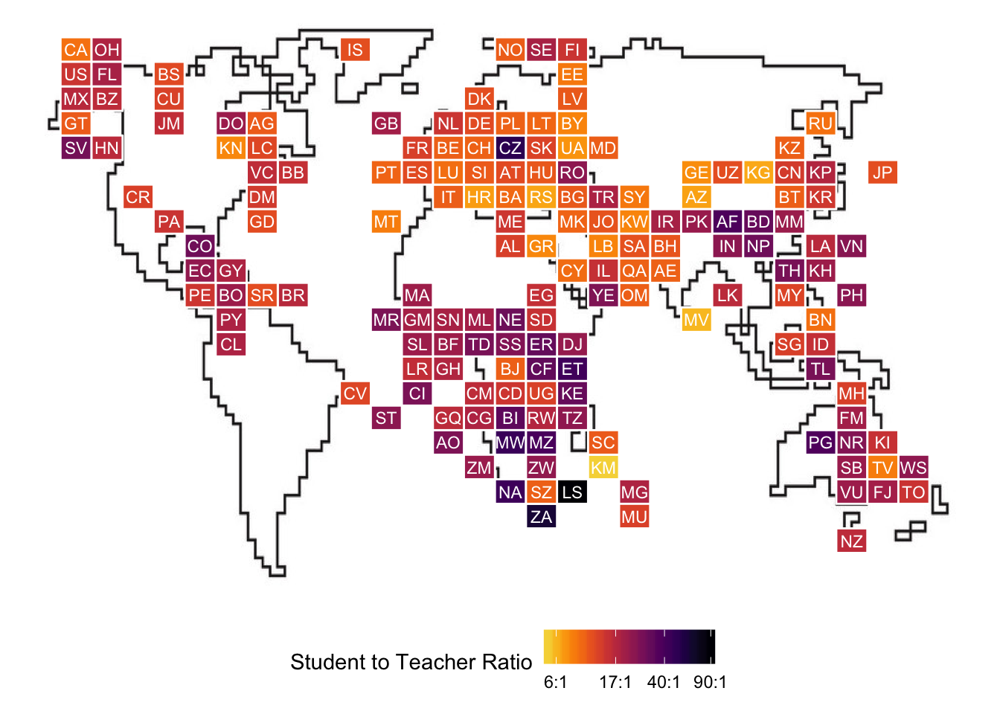
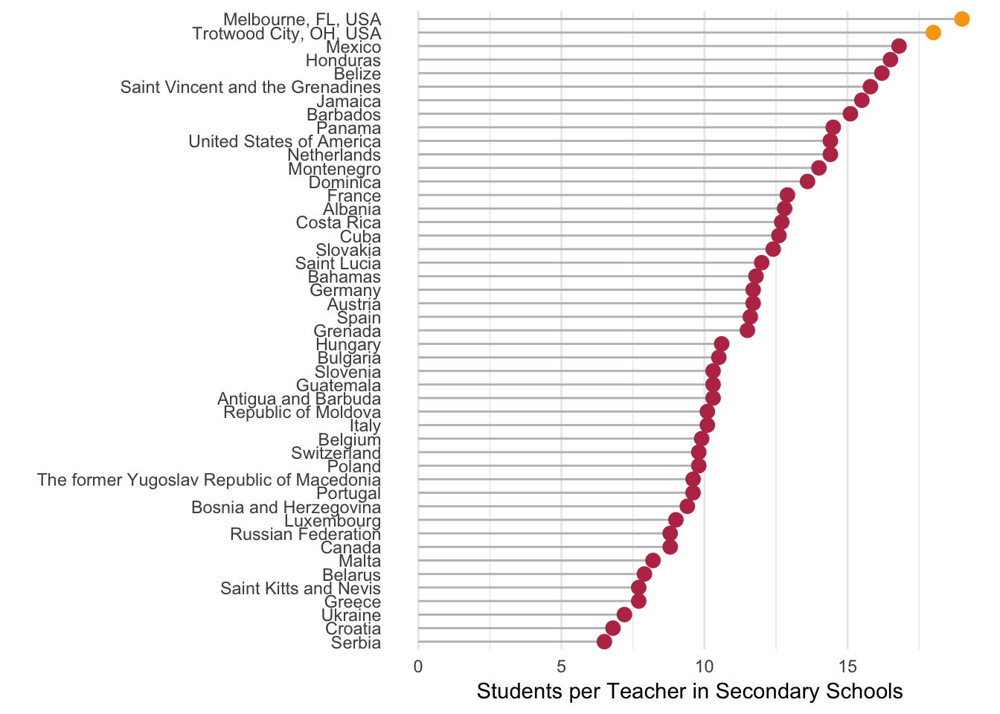

This week’s dataset is about student to teacher ratios. My mom has been a teacher for almost two decades now, at the high-school level, so this analysis is dedicated to her! Happy early mother’s day, mom! The official #TidyTuesday repository can be viewed here, and all code used to create these plots can be viewed here.
My mom has spent most of her time teaching at Palm Bay Magnet Senior High School in Melbourne, FL, but two years ago she and my dad moved to Dayton Ohio, and she currently teaches at Trotwood-Madison High School. I think it’d be interesting to see where the student to teacher ratio’s fall among these global averages that the #TidyTuesday project shared. I’m going to use data about student:teacher ratios, along with a few other tidbits that would be important to my mom to suggest the ideal country for her to move to.
First, I’m going to try to extract data from the US News and World Rankings for these two schools, so I can add them into our dataset.
Palm Bay Magnent High School has a student:teacher ratio of 19:1, and Trotwood Madison High School has a student:teacher ratio of 18:1.
Now, we’ll join the data from mom’s high school to the dataset from #TidyTuesday. We’ll also filter to get only secondary schools, and select only the data that’s the most recent. We also have quite a few data points that aren’t countries, but rather regions, so we’ll get rid of those too.
And now we have a map of student-teacher ratios! Every country is represented by their two-digit country code, while PBMHS is represented by the code “FL”, and TMHS is represented by the code “OH”. Tile location approximates country/school geography.

Since there are 130 countries with a student ratio that’s at least as good as her current skills, we need to narrow down my mom’s options a little bit more. Knowing my mom, she’ll want to live somewhere that’s relatively close to family. My little sister is hoping to move to Germany, my brother and quite a few other family members live in Illinois, and I’ll be living in Califonia soon, and we have family and friends in Florida. Keeping that in mind, let’s limit our search to Europe (except for Northern-Europe - too cold!), North America, Central America, and the Caribbean, and have a student teacher ratio as good or better than 19:1.

Here you go mom! Hope this gives you some ideas next time you’re brainstorming a dream country to move to!